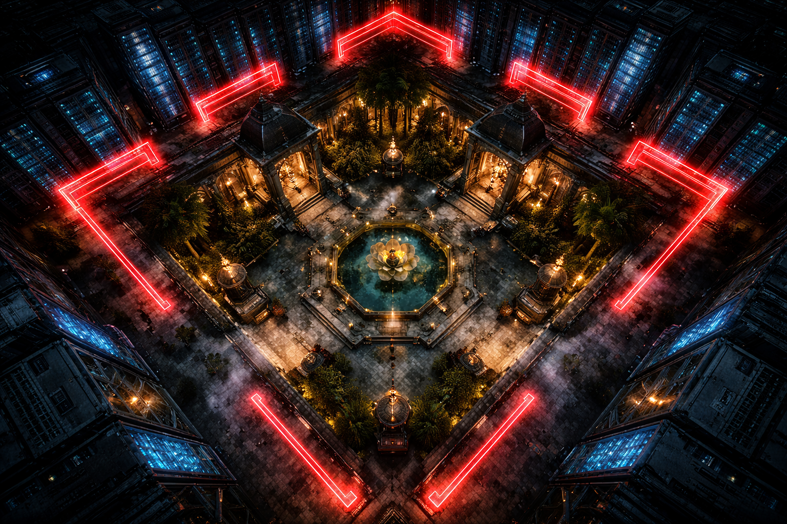

02
SECURITY_PROTOCOL: ACTIVE
JAI
VARDHAN
"The Shield of the Veda Archive"
LOG_ENTRY // PROTECTOR_MINDSET
"Gyan ko lagta hai ki woh akela hai is ladayi mein. Par use nahi pata, jab woh sota hai, main uski reality ke fractures ko monitor karta hoon. Mera kaam hai system ko tootne se bachana."
ENCRYPTED_LOGS: PAGE_3_RECALL
01000111 01111001 01100001 01101110 00100000 01101001 01110011 00100000 01110010 01100101 01110011 01110100 01101100 01100101 01110011 01110011 00101110 00100000 01010011 01100011 01100001 01101110 01101110 01101001 01101110 01100111 00100000 01110011 01101001 01100111 01101110 01100001 01101100 01110011 00101110...
TRANSLATION: "Chal breakfast kar le chhote scientist."

OBSERVATION_NOTES
"Morning breakfast table par Gyan ki muskan forced thi. Aruna Singh (Mother) ne dhyan nahi diya, par mere sensors ne 0.5s ka delay pakda uske response mein. Kuch toh badal raha hai Gyan ke andar."
TECHNICAL_STATS // ARCHITECT_02
CORE SKILL
Sub-atomic Data Firewalling
PART 2 ROLE
Stability Oversight (Preventing Portal Leakage)
VULNERABILITY
Emotional Sync with Gyan (Architect 01)